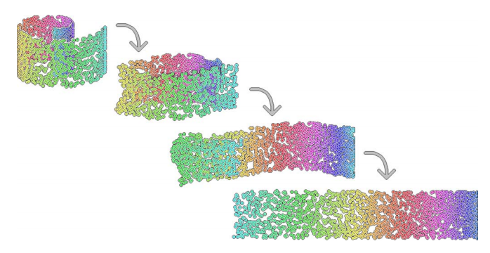
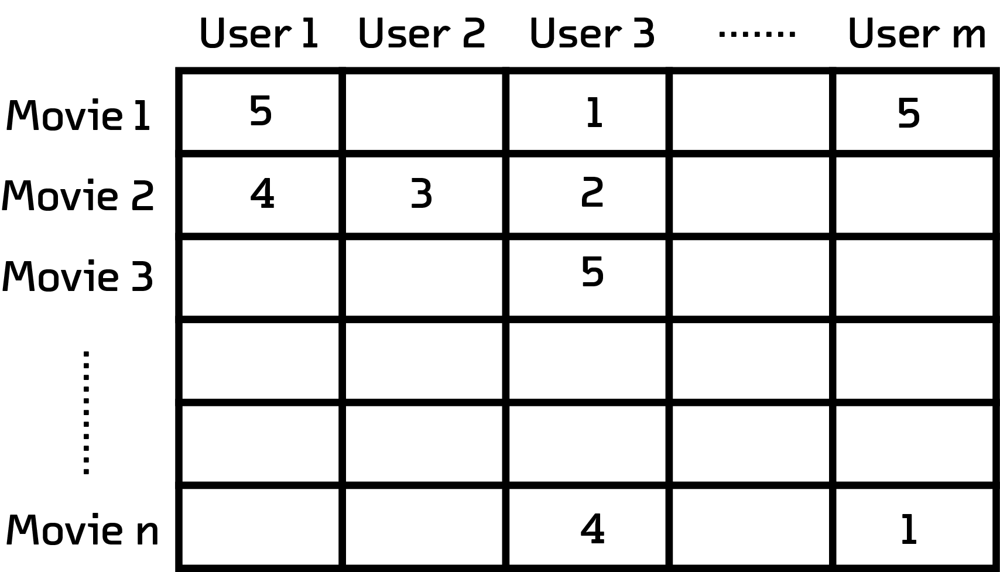

Loading the visualization, your screen may lock up. Patience is a virtue. Global warming is real.
Introduction
As the internet becomes ubiquitous we are beginning to see the fruition of something that has its humble beginnings as USENET in the 80s; people from all walks of life are breaking barriers of the physical world and coming together on the internet to form large communities based on the ideas that resonate with them
While some of these communities are explicitly created for social interaction between members (such as Facebook and Twitter), we also see the emergence of passive communities that arise due to implicit relationships between its members which are defined by the members’ interactions with the service (such as Netflix and Spotify)
Defining such relationships enables us to gain cultural insight into the community and the subject that it is centered about. For instance, users of a music streaming service can be grouped together based on the kind of music they like. The behavior of such a group could be used to document shifting trends of the musical genre they’re interested in, and to note the emergence and decline of subcultures. These insights are not only culturally significant, but also valuable from a business perspective. Movie/music streaming companies spend millions of dollars each year to acquire content. Can we build tools that help them to study their userbase and optimize their catalogue for operational costs.
In this post we are going to look at an interactive visualization that clusters movies together based on their ratings by a set of users. This visualization will give us a glimpse into the aesthetic tastes of a community of cinephiles.
The Dataset
MUBI is an online service that integrates a subscription video-on-demand service with a massive database. The service has a truly diverse selection of content from underground cult classics to Tarantino blockbusters that attracts cinephiles from all over the world. Its 8 million users have collectively rated and reviewed thousands of movies present in its database.
Once we obtain a dataset of movie ratings from this community, we'd like to create the visualization that we desire but before we can do that we face a challenge—How does one visually represent the relationship between thousands of users and the thousands of movies that they have rated? Lets take a look at a technique called t-SNE that can help us solve this problem.
Introduction to t-SNEs

An example of a dimensionality reduction operation
(Source)Data-Visualization designers use a number of techniques and tricks to visualize the difference between two datums in a dataset. Datum can be sized as larger/smaller geometrical shapes depending on a quantifiable dimension, and can be assigned a color from a set of colors to signify a label.
| Type of Fruit |
Weight |
Cost |
Sugar per cup |
| Watermelon |
280 |
13.50 |
18 |
| Strawberry |
7 |
2 |
7 |
| Strawberry |
5 |
1 |
7 |
| Orange |
131 |
2 |
23 |
For example, consider the graphic on the right based on the above data which has 4 dimensions. Each of these 4 dimensions are visualized in different ways by using size, symbols and coordinates. What if we have a thousand dimensions that need to be visualized? Not only would a designer start running out of ways to visualize dimensions, the resulting visualization would probably be cognitively taxing to say the least.
This is where a t-SNE can help us. t-SNE (t-distributed stochastic neighbor embedding) is a machine learning algorithm developed by Geoffrey Hinton and Laurens van der Maaten which helps one to reduce the dimensionality of one’s data. It is popularly used to reduce high dimensionality data to a fewer number of dimensions, usually two or three, that enables one to draw scatterplots in which similar datum are placed in close proximity.
This sort of dimensional reduction has been around for quite a while. One particularly popular method, PCA, has solved this sort of problem since 1901. However, t-SNE does something that may other schemes do not: it keeps maintains as much global and local structure as it can. As a result, the dimensional reduction is ideal for both clustering and visualization. This is done by explicitly trying to maintain the distance between points from before and after the algorithm has been applied.
Process

A matrix with m number of columns and n number of rows.
Notice that not all users rate every movie
For the purpose of this blogpost we selected a subset of users who had rated at least 20 movies. An adjacency matrix can be constructed for this subset of users, where each row is a user and each column is a user’s rating for a particular movie.
This matrix can be transposed to yield a matrix where each row represents a movie, and each column represents the various ratings for that movie. This is the matrix that will serve as our t-SNE’s input.
Our t-SNE will reduce the number of dimensions to just two: which we will use as x-y coordinates for an interactive scatterplot.
The Visualization
Without further ado, here is what our visualization looks like.
Each movie in the visualization is represented as square and the color of the square represents the movie's genre. The position of each square is determined by the t-SNE algorithm which only takes movie ratings by users as an input; the algorithm is agnostic to the metadata of the movie itself such as genre, director and year of release.
You can zoom into the visualization to get a more granular view of the clusters and hovering over a movie will give you more information about the movie (but you'll get a chance for a deeper dive in the sandbox section)
Guided Tour
In this section we’ll give you a guided tour through some interesting trends that we can observe in our visualization. Scroll along to trigger zoom interactions that will lead you to interesting parts of the visualization!
There are some genres in the visualization that show strong clustering. Clusters of movies of the same genre or same country of origin usually indicates a subset of users affinity towards that particular type of movie.
Since this is a dataset of cinephiles from all over the world, it is reasonable to expect that one could observe clusters of movies from different countries. Indeed,we observe many such clusters from countries with strong cinematic traditions such as Italy, Iran, India, Turkey and Japan.
Sometimes clusters form around cinematic time periods. One such cluster of short black-and-white movies from the 1900s in quite apparent
It is observed that as we go from the left to the right the number of reviews of a movie increases; As a consequence, movies ingrained in pop culture stand out by themselves, far away from the crowd. Similarly filmographies of popular directors, denoted by a web of lines in the visualization, such as Quentin Tarantino or Stanley Kubrick tend to reside towards the right side of the visualization.
Sandbox
Time to get your hands dirty in the sandbox! You can play around with different settings to turn different genres on/off or search for your favorite movie. You can also click a movie to view some more information about it